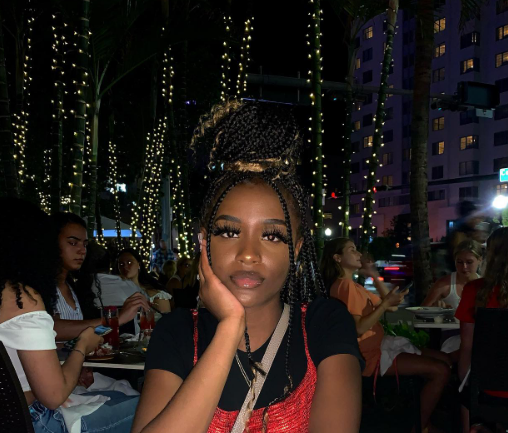

My name is Mumina and i am the editor of Talking Games Blog. I was born in Kenya and
raised in Grand Rapids. I fell in love with gaming at a very young age and have still
been in love with it now.
Talking Games Blog is a independent organization that focuses on publishing reports
and analysis about Game News. I hope to provide not only up to date news but
the best news for my consumers.